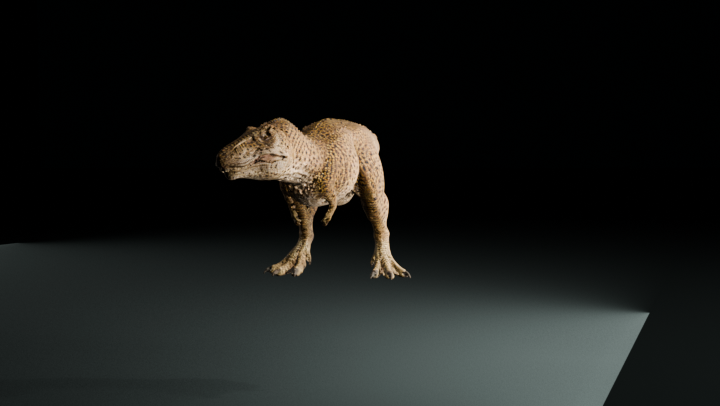

Side
Read the back/down coil, one-foot release, both-feet-clear interval, lead landing and second-foot catch.
V8.1 keeps the strongest V8 walk, ports the accepted V5.5 balance and lower-foot work, fixes the jaw in its anatomical local frame, and separates the grounded normal bite from a one-foot airborne power attack.
Both films import the final GLB into Blender with embedded material/texture, use one locked full-body envelope, and show the same ten-second walk → support-aware entry → launch/bite → landing/arrest → feeding handoff.
Read the back/down coil, one-foot release, both-feet-clear interval, lead landing and second-foot catch.
Gameplay silhouette, target clamp, chest arrest and transition into the feeding brace.
The accepted 66/34 stagger and raised neutral chain.
The locomotion/contact baseline preserved by V8.1.
V5.5 balance on the V8 rig and final 90% foot pivots.
Earlier balance proof.
V8 root track, duration, cadence and speed are exactly preserved; posture/pivot rotations are the explicit allowed seam.
Jaw rotation is rest-local. Geometric skull-space midline offset remains below 2 mm across neutral and symmetric ±18° yaw/±2° roll tests.

No yaw reduction or camera-space hiding was used.